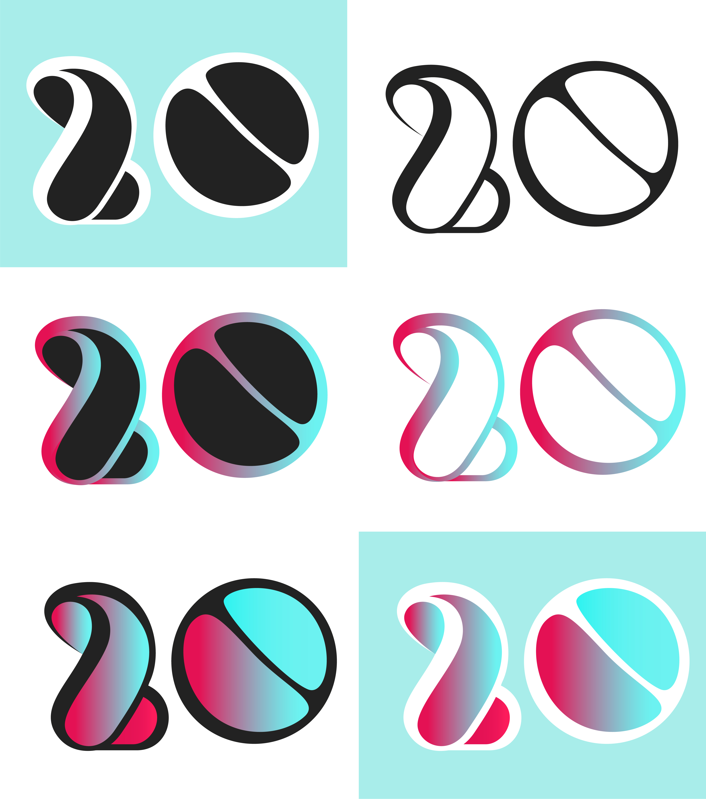

je m'appelle Lisa et je suis étudiante en Master 1 Design Interactif à l'ECV Bordeaux. Je suis passionnée de culture pop et old school, particulièrement musicale et digitale. Voici un petit aperçu de mes travaux scolaires et personnels... très bonne visite !
*Sachez que ce site est encore en construction et a été codé par mes soins.*
Rachael
Illustration au feutre fin et aquarelle, petite référence à la culture pop des années 80...en regardant bien ses yeux vous reconnaîtrez peut être de qui il s'agit !
album
NÄIØ est une artiste islandaise de 25 ans, mystérieuse et charismatique, influencée par les folklores et musiques nordiques...
Bon d'accord en vérité il s'agit de ma grande soeur.
katanakiss
Création d'un logo et ses déclinaisons pour une association de self defense féminin.
manufacture
Logo et affiche pour un centre culturel fictif élitiste basé sur les oeuvres et travaux architecturaux expérimentaux. (ça fait beaucoup de "aux..")
mascotte
Création d'une mascotte pour Ekosea, plateforme de crowdfunding concentrée sur la protection des océans. Ekossie est un petit monstre dissident inspiré de la créature du lac Noir.

cheeeeese
Ellaboration d'un logo et ses variations pour l'agence Cheeeeese lors d'un concours interne à l'ECV. Le but était ici de créer un logo festif pour les 20 ans de l'agence. Pour se faire je me suis lourdement inspirée des motifs kitsch des années 90.
l'amoureux de la mer
Dyptique autour de l'illusion de texture : tentacule réalisée en aquarelle et personnage au feutre noir. Tout est réalisé à la main, pas de collage (comme on a souvent pu me le demander) !
Wonder flanby
Seconde partie de l'exercice de texture : flanby et caramel réalisés en aquarelle, le reste au feutre noir. On désacralise un peu cette grande icône des comics avec un peu de caramel sur la tête...
yōkai friends
Petit délire personnel autour du mythe des Yōkai, fantômes et démons du folklore japonais. J'ai ici repris des Yōkais déjà existants et inventé quelques un...Comme le garçon citrouille qui viendrait hanter vos potagers la nuit tombée, ou l'enfant crapaud profanateur des tombeaux de vos ancêtres pour se vêtir de leurs os.
biginjapan
Exercice technique sur l'illustration en flatdesign. Balade nocturne d'une héroïne sans visage à la recherche d'un temple sacré caché dans la forêt du mont Fuji...
Alien The Game
Projet graphique physique completculture pop des années 80...en regardant bien ses yeux vous reconnaîtrez peut être de qui il s'agit !
alertés par les marées
Dans le cadre d'un projet réalisé autour de l'origine de ma famille, j'ai documenté (à ma manière), ce qu'auraient pu être les cartes des marées et des étoiles qui auraient pu guider mes ancêtres marins d'Alexandrie à Bordeaux.
guidés par les étoiles
Dans le cadre d'un projet réalisé autour de l'origine de ma famille, j'ai documenté (à ma manière), ce qu'auraient pu être les cartes des marées et des étoiles qui auraient pu guider mes ancêtres marins d'Alexandrie à Bordeaux.
presque une star
Doppelgänger Rolling Stone : exercice d'édition dans lequel nous étions chargés de choisir un magazine et de copier sa mise en page exactement à l'identique en créant un nouveau numéro inédit à notre image. J'ai donc créé un RS inédit sur Haeliz, étoile montante du rock.
FYRE fest
Création d'un alphabet modulaire et son application dans un dyptique d'affiches événementielles d'un festival fictif en Islande à la Reyjkavik Harpa, plus grand espace de concert de la capitale. L'alphabet en question concerne le titre.
YCE fest
Création d'un alphabet modulaire et son application dans un dyptique d'affiches événementielles d'un festival fictif en Islande. L'alphabet en question concerne le titre. J'ai effectivement une passion pour cette culture et ce pays !...
Couvertures de livres
Refonte personnelle des couvertures de certains de mes livres préférés autour du labyrinthe...N'hésitez pas à zoomer pour les détails.